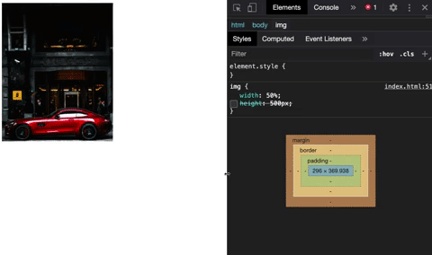

Metodologias de CSS
Postado 13 de Junho 2024 
BEM (Block Element Modifier)
- Fundamentação teórica: Metodologia para criar componentes de CSS mais legíveis e escaláveis.
- Como funciona: Nomeia classes CSS em formato de blocos, elementos e modificadores.
- Exemplos de aplicações modernas: Interfaces de usuário complexas em grandes aplicativos web.
- Como você usará em seus projetos: Para manter a consistência e modularidade do CSS.
OOCSS Object-Oriented CSS
- Fundamentação teórica: Promove a reutilização e manutenção de estilos através da divisão em objetos.
-Como funciona: Divide o CSS em estrutura e aparência separadamente.
- Exemplos de aplicações modernas: Projetos de larga escala com necessidade de estilos reutilizáveis.
- Como você usará em seus projetos: Para criar um código CSS mais eficiente e fácil de manter.